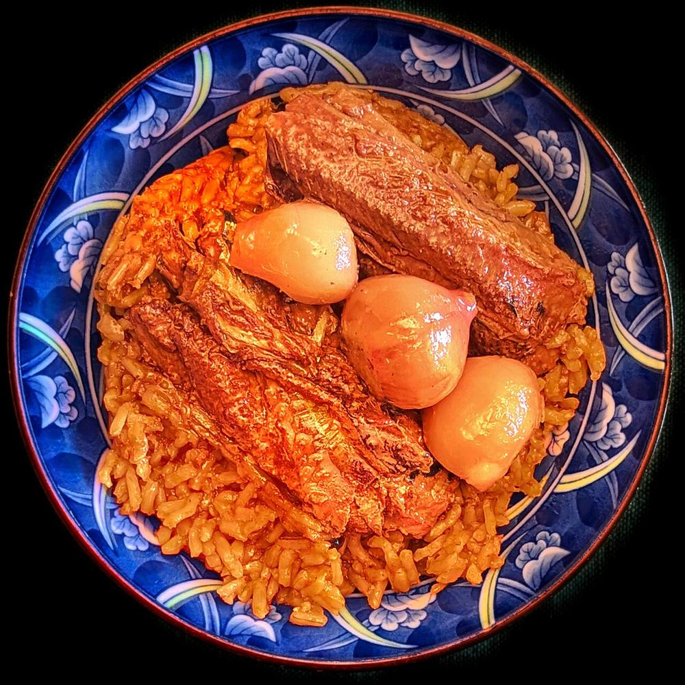
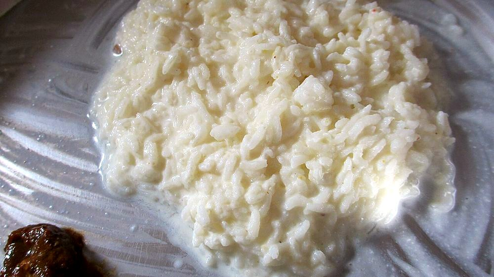
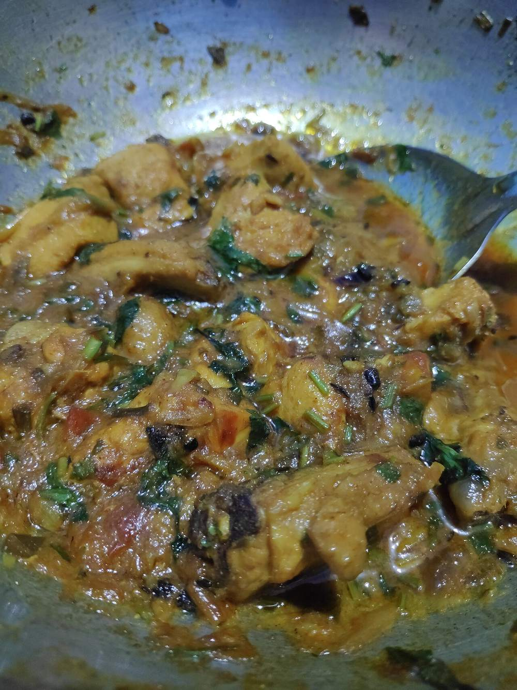

A cuisine carried across a border
Sindhi Cuisine
The kitchen of a river province in present-day Pakistan, kept alive in India by the community that left it. Sour, onion-heavy, and cooked without a homeland for close to eighty years.
The kitchen of a river province in present-day Pakistan, kept alive in India by the community that left it. Sour, onion-heavy, and cooked without a homeland for close to eighty years.
Sindh is the lower Indus: a strip of irrigated land running down to the Arabian Sea, with desert on one side and the delta on the other. Everything about the old Sindhi plate follows from that geography. Rice grew along the canals and wheat behind them; lotus stem (bhee) was pulled out of the standing water of the ponds and became one of the few vegetables a cuisine anywhere treats as a staple; freshwater palla fish ran up the Indus in season and was cooked over a slow fire on one side only. The province was also a corridor, sitting on the sea route to the Gulf and the land route to Kandahar, and dried fruit, sour agents and whole spices came in along both.
Two social facts shaped it further. Sindh was Sufi country, its shrines at Sehwan and Bhit Shah drawing Hindus and Muslims to the same courtyards, and the food of the two communities diverged far less than it did elsewhere in the subcontinent. The same kadhi, the same koki, the same habit of browning onion until it collapses. And the Sindhi Hindus were overwhelmingly a mercantile caste group: shopkeepers, moneylenders and traders, living by the ledger and the shopfront. Their cooking is trader's cooking: fast on a working morning, generous on a Sunday, and built around things that keep.
Partition cut Sindh away whole1. The province went to Pakistan intact; Punjab and Bengal were the ones cut in two. The Sindhi Hindu minority, perhaps a million people, left over the following two years by ship from Karachi and by train through Rajasthan. They did not arrive anywhere in a block. They settled in Bombay, in Gujarat at Gandhidham and Adipur, in Ajmer, in Jaipur, in Delhi, and above all in the emptied military camp outside Bombay that they renamed Ulhasnagar, where barracks became lanes of shops. Sindhi is the only major cuisine on this site whose home region lies outside India, and the map of India's cuisine zones has no Sindhi zone to give it. The community itself became the map.
Very little of the food dissolved. Deprived of Sindh's lotus ponds and its palla, the cuisine kept its logic and substituted where it had to: bhee travelled in from Kashmir and Bengal to city markets, and the fish quietly dropped out. The Sunday kadhi, the Cheti Chand sweets marking the Sindhi new year, the koki packed for a train. These survived because they belonged to the household. There is barely any Sindhi restaurant tradition to speak of, and for decades almost no Sindhi cookbooks; the recipes moved from mother to daughter across three cities at once. That is also why the dishes are so consistent from one household to another and so nearly invisible on a national menu.
The weekday centre of it is sai bhaji: spinach cooked right down with chana dal and whatever else is in the house (dill, sorrel, aubergine, carrot, tomato) into a soft green mash, eaten with plain rice. It is one dish doing the work of three, vegetable and dal and gravy together, and it is the thing most Sindhis mean when they say they want home food. Alongside it sits koki, a thick crumbly flatbread kneaded with chopped onion, coriander and green chilli, half-cooked on the tawa, taken off, pressed thicker and returned to finish. It stays edible for two days, which is exactly why a trading family made it, and it is still the bread that goes into a lunchbox.
The weekend is more formal. Sunday lunch is Sindhi kadhi (a roasted gram flour and tamarind curry, nothing like the yogurt kadhis of Gujarat or Punjab, loaded with drumstick, okra, potato and cluster beans) poured over bhuga chawal, rice browned in caramelised onion. Sunday breakfast is dal pakwan: soft chana dal under chaat masala and raw onion, with crisp fried maida discs broken over it, sweet with tamarind chutney on the side. It is the one Sindhi dish that has genuinely escaped the community, sold now off carts in Mumbai and Pune to people who have no idea where it came from.
The palate is the giveaway. Sindhi cooking is sourer than anything around it and reaches for tamarind first, then dried pomegranate seed (anardana) and amchur, often two of them in the same pot. That sourness runs against a real chilli heat and a heavy hand with garam masala, and the result is sharp, with an edge that stays in the mouth. Sindhi biryani is the extreme case: mutton, potato, yogurt and dried plums layered with far more chilli and far more sour than a Hyderabadi or Lucknowi cook would allow, and it is the version of biryani that Pakistan now eats as a national dish, on both sides of a border the recipe ignores.
Underneath all of it is onion, used in quantities that mark the cuisine out. It is browned to a dark collapse for bhugal, the base of half the meat dishes; it is smothered raw with the main ingredient and a wet masala in the seyal method that gives seyal bhaji and seyal gosht their name; it goes uncooked into koki dough and raw over dal pakwan. Garlic follows it closely. There is no restraint being exercised here and none was intended. This is a cuisine of strong flavours from a place that traded in them, still being cooked, several generations later, several hundred miles from home.


 Aloo Tuk
Aloo Tuk
 Bhee Patata
Bhee Patata
 Bhee ji Bhaji
Bhee ji Bhaji

Bhuga ChawalDal Pakwan
 Koki
Koki

Mitho LoloSai Bhaji
 Sanna Pakora
Sanna Pakora
 Seyal Bhaji
Seyal Bhaji
 Seyal Gosht
Seyal Gosht
 Sindhi Besan Bhaji
Sindhi Biryani
Sindhi Besan Bhaji
Sindhi Biryani

Sindhi Chicken Curry Sindhi Dodo
Sindhi Dodo
 Sindhi Kadhi
Sindhi Kadhi
 Sindhi Seero
Sindhi Seero
 Sindhi Teevan
Sindhi Teevan
 Sindhi Tomato Chutney
Sindhi Tomato Chutney
 Tidali Dal
Tidali Dal
Not cooking tonight?
Tell us what is in your kitchen, and Khaana will help you cook an authentic Indian meal.